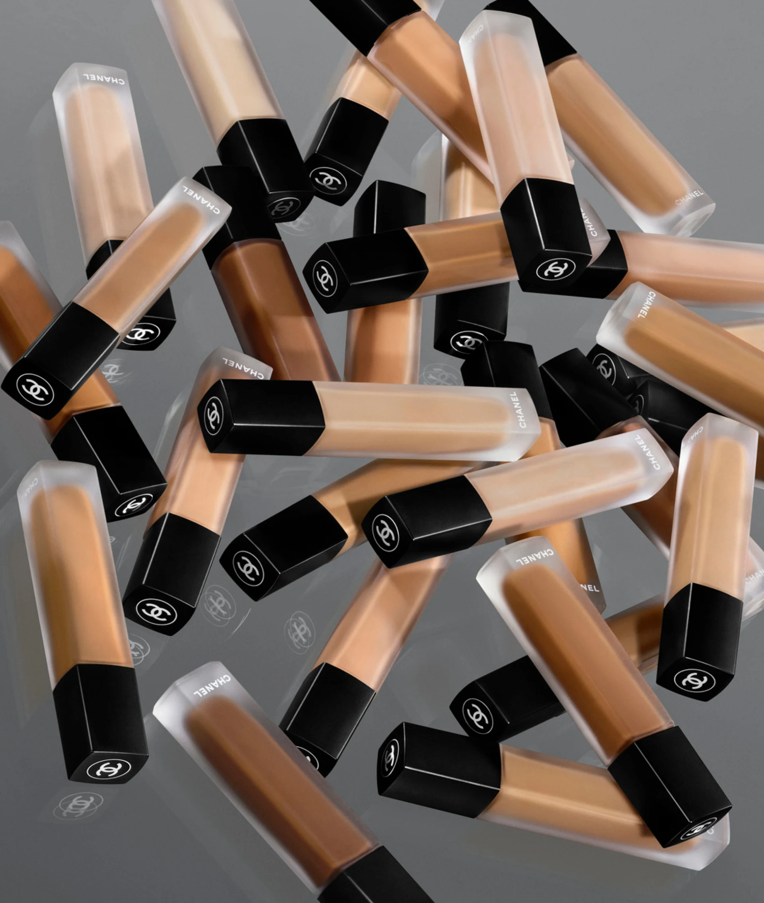

ACABAMENTO MATE LUMINOSO. DURAÇÃO INCRIVELMENTE LONGA.
O novo corretivo de alta cobertura possui uma textura fina e um efeito
de segunda pele, que corrige, suaviza e
ilumina a área dos olhos. Disponível em 30 tons.
